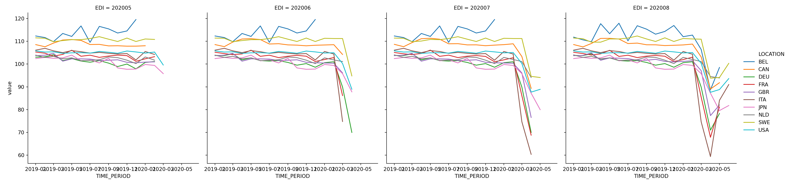

OECD.orgからマクロパネルデータをAPIで取得する

おはこんばんにちは。マクロ経済データを集める方法はいくつかありますが、各国のデータを集めるとなると一苦労です。ですが、OECDからAPI経由でデータ取得すれば面倒な処理を自動化できます。今日はその方法をご紹介します。
1.OECD.Stat Web API
OECD.orgではOECD.Statというサービスを提供しており、OECD加盟国と特定の非加盟国の様々な経済データが提供されています。WEBサイトに行けば手動でcsvデータをダウンロードすることもできますが、定期的にデータを取得し、分析する必要があるならばデータ取得処理を自動化したい衝動に駆られます。OECDはWeb APIを提供しているので、PythonやRさえ使えればこれを実現できます。
以下は、現時点での特定のOECD REST SDMXインターフェースの実装詳細のリストです。
匿名クエリのみがサポートされ、認証はありません。
各レスポンスは1,000,000件のオブザベーションに制限されています。
リクエストURLの最大長は1000文字です。
クロスオリジンリクエストは、
CORSヘッダでサポートされています (CORSについての詳細は こちらを参照)。エラーは結果には返されませんが、HTTP ステータスコードとメッセージは Web サービスガイドラインに従って設定されます。
存在しないデータセットが要求された場合は、401 Unauthorizedが返されます。
RESTクエリの source (または Agency ID) パラメータは必須ですが、「ALL」キーワードはサポートされています。バージョニングはサポートされていません: 常に最新の実装バージョンが使用されます。
データの並べ替えはサポートされていません。
lastNObservationsパラメータはサポートされていません。dimensionAtObservation=AllDimensionsが使用されている場合でも、観測は時系列 (またはインポート固有) の順序に従います。現時点では、参照メタデータの検索はサポートされていません。
2.pandasdmx
Web APIはsdmx-jsonという形式で提供されます。Pythonではこれを使用するための便利なパッケージが存在します。それが**pandasdmx**です。データをダウンロードする方法は以下の通りです。
pandasdmxをimportし、Requestメソッドに引数として’OECD’を渡し、api.Requestオブジェクトを作成する。- 作成した
api.Requestオブジェクトのdataメソッドにクエリ条件を渡し、OECD.orgからsdmx-json形式のデータをダウンロードする。 - ダウンロードしたデータを
to_pandas()メソッドでpandasデータフレームへ整形する。
3.実装
では、実際にやってみましょう。取得するのは、「**Revisions Analysis Dataset -- Infra-annual Economic Indicators**」というデータセットです。OECDのデータセットの一つであるMonthly Ecnomic Indicator(MEI)の修正を含む全てのデータにアクセスしているので、主要な経済変数(国内総生産とその支出項目、鉱工業生産と建設生産指数、国際収支、複合主要指標、消費者物価指数、小売取引高、失業率、就業者数、時間当たり賃金、貨マネーサプライ、貿易統計など)について、初出時の速報データから修正が加えられた確報データまで確認することができます。このデータセットでは、1999年2月から毎月の間隔で、過去に主要経済指標データベースで分析可能だったデータのスナップショットが提供されています。つまり、各時点で入手可能なデータに基づく、予測モデルの構築ができるデータセットになっています。最新のデータは有用ですが速報値なので不確実性がつきまといます。バックテストを行う際にはこの状況が再現できず実際の運用よりも良い環境で分析してしまうことが問題になったりします。いわゆるJagged edge問題です。このデータセットでは実運用の状況が再現できるため非常に有用であると思います。今回は以下のデータ項目を取得します。
| 統計概要 | 統計ID | 頻度 |
|---|---|---|
| GDP | 101 | 四半期 |
| 鉱工業生産指数 | 201 | 月次 |
| 小売業取引高 | 202 | 月次 |
| マネーサプライ - 広義流動性 | 601 | 月次 |
| 貿易統計 | 702+703 | 月次 |
| 経常収支 | 701 | 四半期 |
| 就業者数 | 502 | 月次 |
| 失業率 | 501 | 月次 |
| 時間当たり賃金（製造業） | 503 | 月次 |
| 単位あたり労働コスト | 504 | 四半期 |
| 建築生産指数 | 203 | 月次 |
まず、関数を定義します。引数はデータベースID、その他ID(国IDや統計ID)、開始地点、終了地点です。
import pandasdmx as sdmx## C:\Users\aashi\Anaconda3\lib\site-packages\pandasdmx\remote.py:13: RuntimeWarning: optional dependency requests_cache is not installed; cache options to Session() have no effect
## RuntimeWarning,oecd = sdmx.Request('OECD')
def resp_OECD(dsname,dimensions,start,end):
dim_args = ['+'.join(d) for d in dimensions]
dim_str = '.'.join(dim_args)
resp = oecd.data(resource_id=dsname, key=dim_str + "/all?startTime=" + start + "&endTime=" + end)
df = resp.to_pandas().reset_index()
return(df)データを取得する次元を指定します。以下では、①国、②統計項目、③入手時点、④頻度をタプルで指定しています。
dimensions = (('USA','JPN','GBR','FRA','DEU','ITA','CAN','NLD','BEL','SWE','CHE'),('201','202','601','702','703','701','502','503','504','203'),("202001","202002","202003","202004","202005","202006","202007","202008"),("M","Q"))関数を実行します。
result = resp_OECD('MEI_ARCHIVE',dimensions,'2019-Q1','2020-Q2')
result.count()## LOCATION 8266
## VAR 8266
## EDI 8266
## FREQUENCY 8266
## TIME_PERIOD 8266
## value 8266
## dtype: int64データの最初数件を見てみます。
result.head()## LOCATION VAR EDI FREQUENCY TIME_PERIOD value
## 0 BEL 201 202001 M 2019-01 112.5
## 1 BEL 201 202001 M 2019-02 111.8
## 2 BEL 201 202001 M 2019-03 109.9
## 3 BEL 201 202001 M 2019-04 113.5
## 4 BEL 201 202001 M 2019-05 112.1データがTidyな形(Long型)で入っているのがわかります。一番右側のvalueが値として格納されており、その他インデックスは
LOCATION - 国
VAR - 統計項目
EDI - 入手時点(MEI_ARCHIVEの場合)
FREQUENCY - 頻度(月次、四半期等)
TIME_PERIOD - 統計の基準時点
となっています。よって、EDIが異なる行で同じTIME_PERIODが存在します。例えば、上ではベルギー(BEL)の鉱工業生産指数(201)の2020/01時点で利用可能な2019-01~2019-05のデータが表示されています。可視化や回帰も行いやすいLongフォーマットでの提供なので非常にありがたいですね。鉱工業生産指数がアップデートされていく様子を可視化してみました。
import seaborn as sns
import matplotlib.pyplot as plt
import pandas as pd
result = result[result['FREQUENCY']=='M']
result['TIME_PERIOD'] = pd.to_datetime(result['TIME_PERIOD'],format='%Y-%m')
sns.relplot(data=result[lambda df: (df.VAR=='201') & (pd.to_numeric(df.EDI) > 202004)],x='TIME_PERIOD',y='value',hue='LOCATION',kind='line',col='EDI')## <seaborn.axisgrid.FacetGrid object at 0x00000000316C0188>plt.show()
コロナの経済的な被害が大きくなるにつれて折れ線グラフが落ち込んでいく様子が見て取れる一方、微妙にですが過去値についても速報値→確報値へと修正が行われています。また、国によって統計データの公表にラグがあることも分かります。ベルギーは最も公表が遅いようです。時間があるときに、このデータを使った簡単な予測モデルの分析を追記したいと思います。
4.別件ですが。。。
Python 3 エンジニア認定データ分析試験に合格しました。合格率70%だけあって、かなり簡単でしたがPythonを基礎から見返すいい機会になりました。今やっている業務ではデータ分析はおろかPythonやRを使う機会すらないので、転職も含めた可能性を考えています。とりあえず、以下の資格を今年度中に取得する予定で、金融にこだわらずにスキルを活かせるポストを探していこうと思います。ダイエットと同じで宣言して自分を追い込まないと。。。
- G検定
- Oracle Database Master Silver SQL
- Linuc レベル 1
- 基本情報技術者
- AWS 認定ソリューションアーキテクト - アソシエイト
合格状況は都度ブログで報告していきたいと思います。